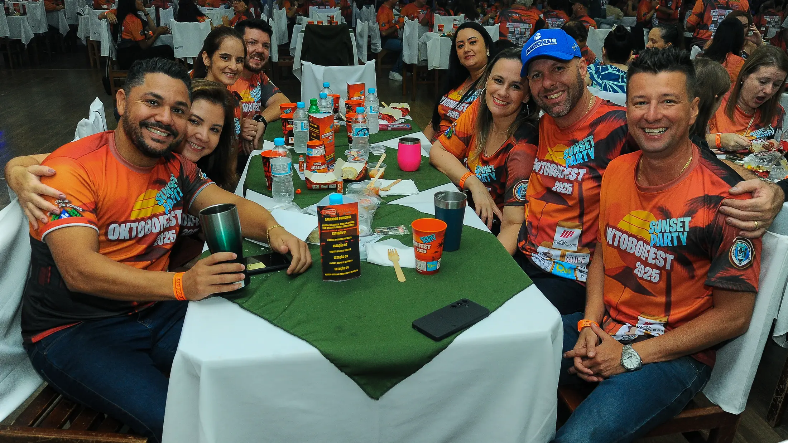
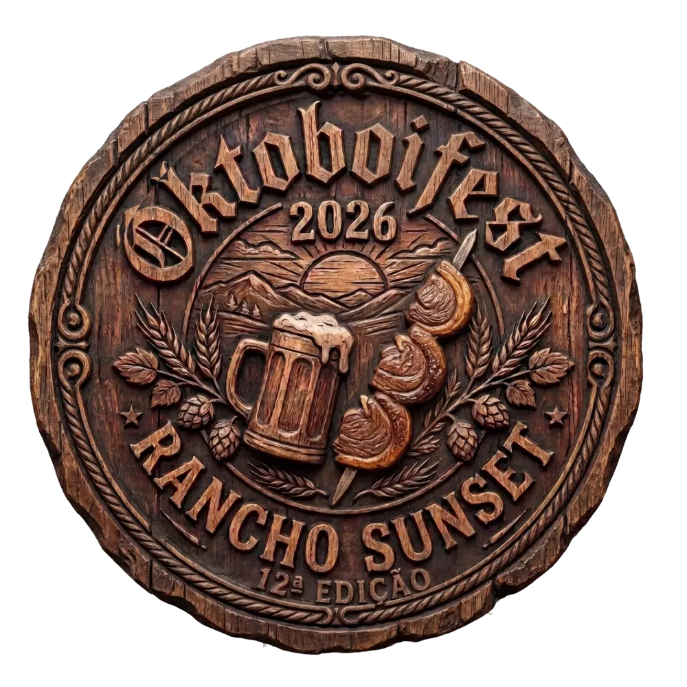
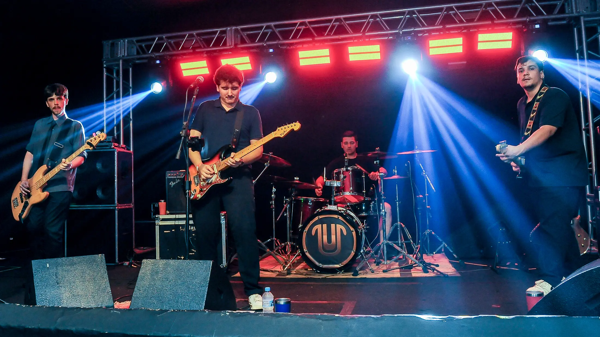
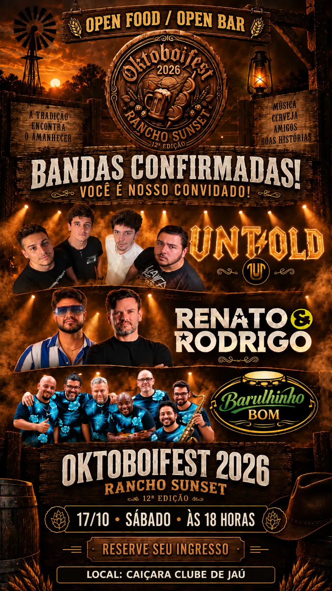
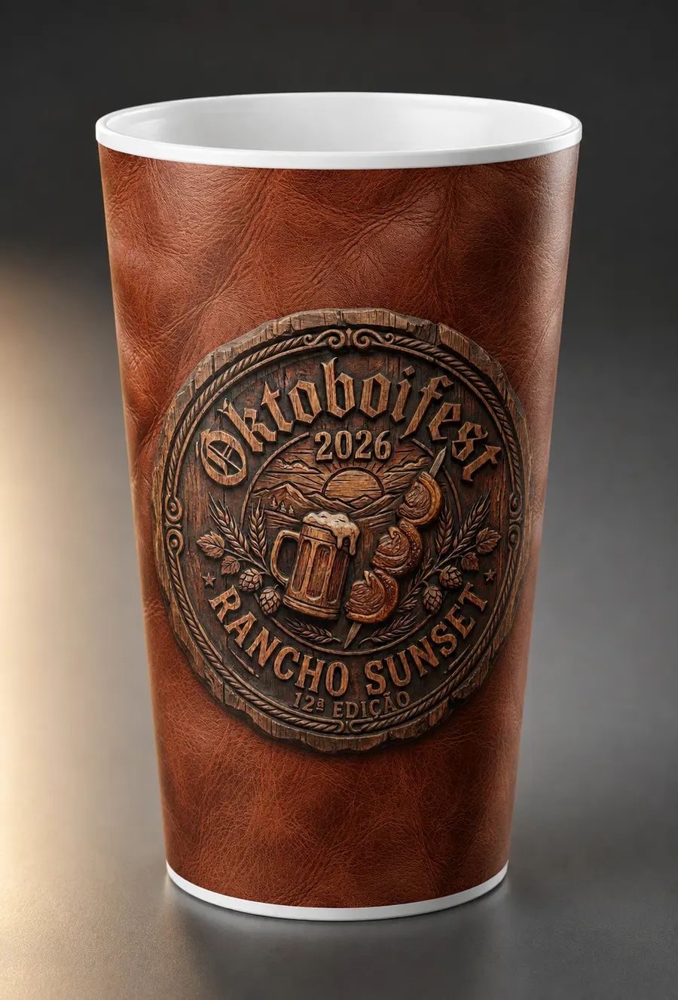
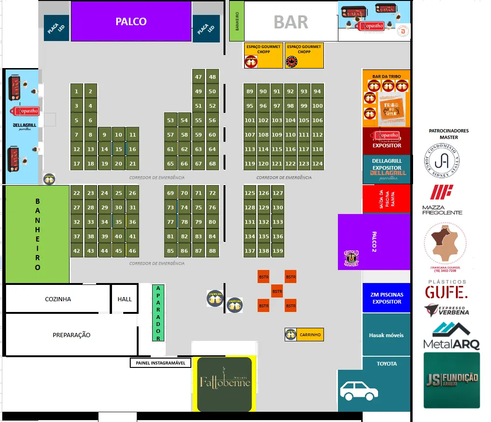
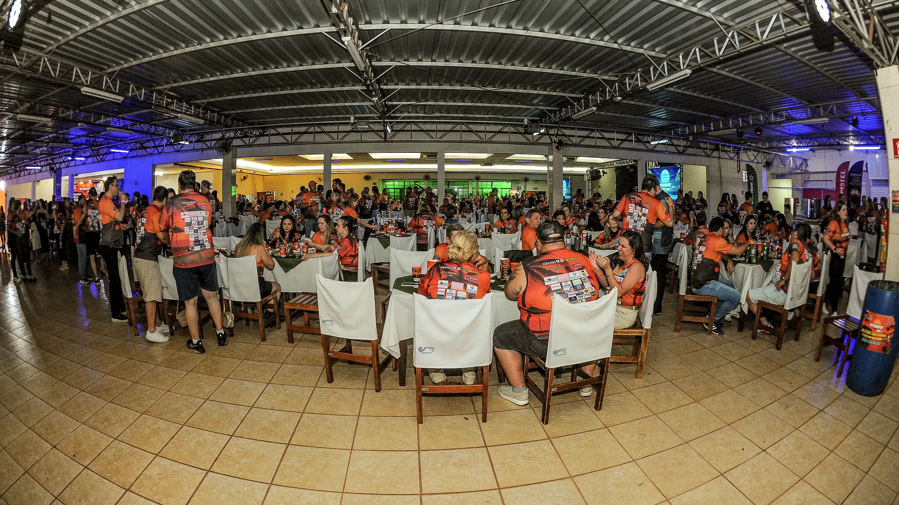

PERTENCIMENTO
Uma festa para viver junto
Vista a camiseta oficial, reúna os amigos e faça parte da 12ª edição.

17 OUT 2026 SÁBADO 18H

Vista a camiseta oficial, reúna os amigos e faça parte da 12ª edição.
Cortes especiais preparados ao vivo, do Angus ao copa-lombo.
Ver cardápio →Rótulos premium, artesanais e uma novidade sem álcool.
Conhecer torneiras →
Sertanejo, pop rock e pagode em uma jornada musical completa.

Dois palcos e três atmosferas para atravessar a noite: sertanejo, pop rock e pagode.

Use os filtros para encontrar estilos premium, artesanais e sem álcool. Os nomes das marcas podem ser incluídos assim que confirmados.
Localize sua mesa pelo número e use os filtros para encontrar palcos, chopp, banheiros, alimentação, expositores e pontos de apoio.

ARRASTE LATERALMENTE NO CELULAR PARA VER TODO O MAPA • MESAS 1 A 139 EM VERDE-OLIVA.
Áreas preparadas para logos quadradas, organizadas pela categoria comercial.
